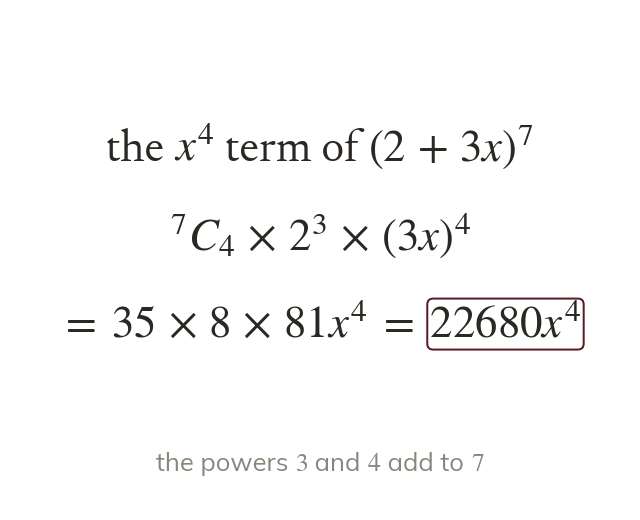
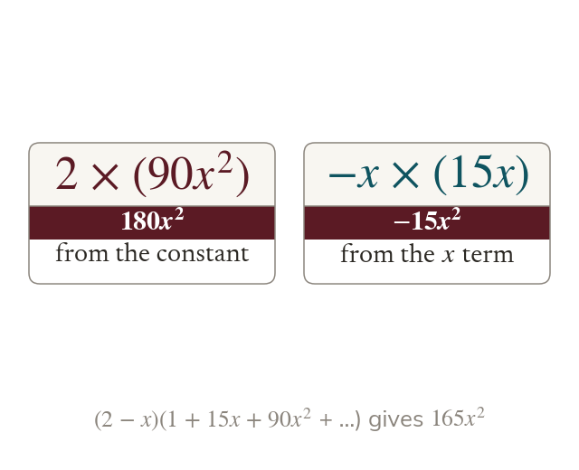
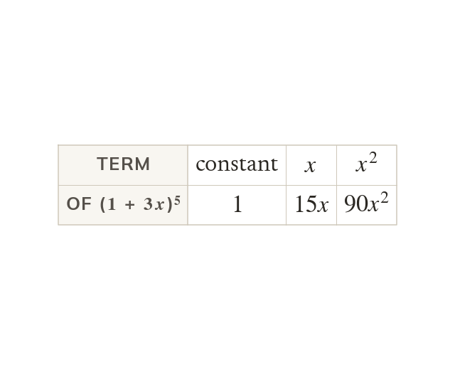
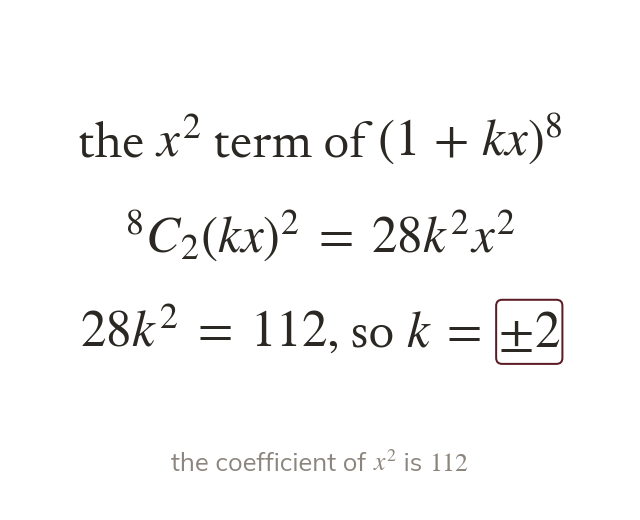
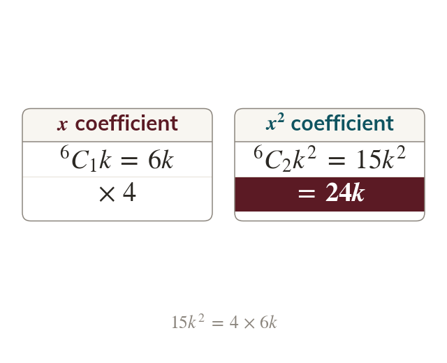
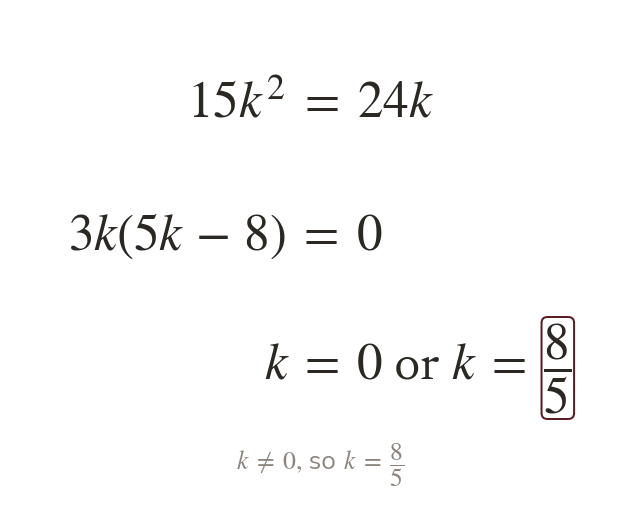

One term
The term in of (a + bx)ⁿ is ⁿC₃aⁿ⁻³(bx)³, so a coefficient needs only that one term. The power of picks the choose number and both powers.
An exam question rarely asks for a whole expansion; it asks for one coefficient, or gives a coefficient and asks for a constant. One term of the binomial expansion answers both, and the next lesson uses the first few terms to estimate a value.
Work down the page at your own pace. Write every answer in your book first, then click to check it.
Read each card, then follow the worked examples one step at a time.

The term in of (a + bx)ⁿ is ⁿC₃aⁿ⁻³(bx)³, so a coefficient needs only that one term. The power of picks the choose number and both powers.

In + dx)(a + bx)ⁿ, two pairs of terms can make the power wanted. For the constant pairs with the term and the term pairs with the term.

Expand the bracket to the power only as far as the highest power wanted. For an coefficient, three terms are enough.
Pick an answer. If it's wrong, the feedback tells you which mistake it was.
Write the blanks in your book first, then tap each one to check.
Read each card, then follow the worked examples one step at a time.

When the bracket holds an unknown the coefficient is an expression in Setting it equal to the value given makes an equation.

A question can link two coefficients, such as one being times the other. Write each in k, then form the equation the words describe.

Dividing both sides by loses
Factorise instead, then reject if the question says is not
Pick an answer. If it's wrong, the feedback tells you which mistake it was.
Write the blanks in your book first, then tap each one to check.
Finished? Next lesson: 8.5 Binomial Estimation.
For each skill, tap the one that is true for you today. Your Revise pages start with anything you mark Not yet.
Your ratings are saved on this device only.
Log in, then search for a code to practise that skill.